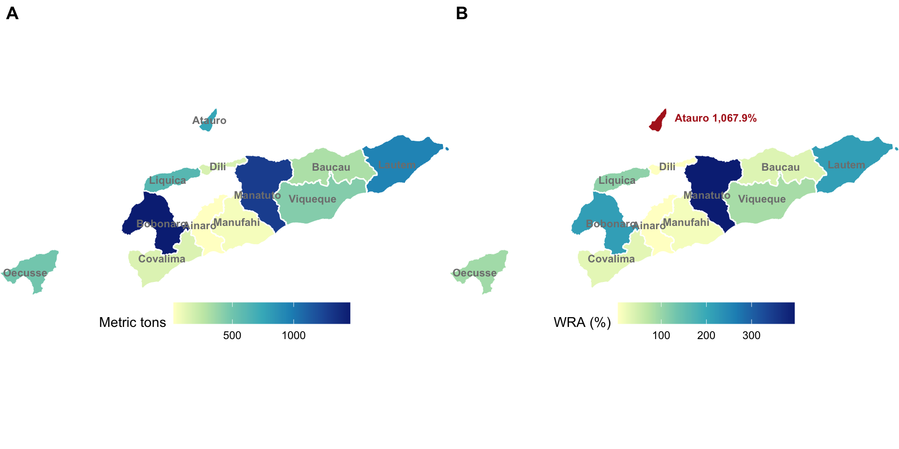

4 Nutrients distribution
This section presents the analyses that illustrates the distribution of nutrients within various components of small-scale fisheries in East Timor.
4.1 Fish groups
library(ggplot2)
library(ggforce)
catch_groups_name <-
timor.nutrients::catch_groups %>%
dplyr::select(
grouped_taxa = interagency_code,
catch_name
)
timor.nutrients::nutrients_table %>%
dplyr::left_join(catch_groups_name) %>%
dplyr::select(catch_name, Selenium_mu:Vitamin_A_mu) %>%
rename_nutrients_mu(hyphen = FALSE) %>%
tidyr::pivot_longer(-catch_name, names_to = "nutrient", values_to = "concentration") %>%
dplyr::filter(!nutrient == "selenium" & !catch_name %in% "Other") %>%
dplyr::left_join(RDI_tab) %>%
dplyr::mutate(
nutrient = stringr::str_to_title(nutrient),
nutrient = dplyr::case_when(
nutrient == "Omega3" ~ "Omega-3",
nutrient == "Vitamina" ~ "Vitamin-A",
TRUE ~ nutrient
)
) %>%
dplyr::mutate(rdi = (concentration * 100) / conv_factor) %>%
dplyr::group_by(catch_name) %>%
dplyr::mutate(tot = sum(rdi)) %>%
ggplot2::ggplot(ggplot2::aes(rdi, reorder(catch_name, rdi), fill = nutrient)) +
ggplot2::theme_minimal() +
ggplot2::geom_col() +
ggplot2::scale_fill_viridis_d(direction = -1) +
ggplot2::scale_x_continuous(labels = scales::percent) +
ggplot2::labs(y = "", x = "Matched RNI from 100g portion", fill = "") +
theme(legend.position = "bottom")

Figure 4.1: Fish groups’ nutrional contribution to RNI.
4.2 Habitat and gear type
parallel_plot <-
timor.nutrients::kobo_trips %>%
dplyr::select(habitat, gear_type, Selenium_mu:Vitamin_A_mu) %>%
rename_nutrients_mu() %>%
tidyr::pivot_longer(-c(habitat, gear_type), names_to = "nutrient", values_to = "concentration_g") %>%
dplyr::group_by(habitat, gear_type, nutrient) %>%
dplyr::summarise(concentration_g = sum(concentration_g, na.rm = T)) %>%
# get relative values
dplyr::group_by(nutrient) %>%
dplyr::mutate(
nutrient_sum = sum(concentration_g),
concentration_g = concentration_g / nutrient_sum * 100
) %>%
dplyr::ungroup() %>%
# dplyr::mutate(concentration_g = dplyr::case_when(
# nutrient == "calcium" ~ concentration_g * 1000,
# nutrient == "iron" ~ concentration_g * 1000,
# nutrient == "omega3" ~ concentration_g * 1,
# nutrient == "protein" ~ concentration_g * 1,
# nutrient == "selenium" ~ concentration_g * 1000000,
# nutrient == "vitaminA" ~ concentration_g * 1000000,
# nutrient == "zinc" ~ concentration_g * 1000,
# TRUE ~ concentration_g
# )) %>%
dplyr::mutate(dplyr::across(habitat:nutrient, ~ as.factor(.x))) %>%
dplyr::mutate(
nutrient = as.factor(nutrient)
) %>%
dplyr::mutate(
nutrient = stringr::str_to_title(nutrient),
nutrient = dplyr::case_when(
nutrient == "Omega3" ~ "Omega-3",
nutrient == "Vitamina" ~ "Vitamin-A",
TRUE ~ nutrient
)
) %>%
dplyr::rename(
"Nutrient" = nutrient,
"Habitat" = habitat,
"Gear type" = gear_type
) %>%
ggforce::gather_set_data(c(3, 1, 2))
parallel_plot$x <- factor(parallel_plot$x,
levels = c("3", "1", "2"),
labels = c("Nutrient", "Habitat", "Gear type")
)
parallel_plot$y <- factor(parallel_plot$y, levels = c(
"Protein", "Omega-3", "Calcium", "Iron", "Vitamin-A", "Zinc", "Selenium",
"Deep", "Reef", "FAD", "Beach", "Traditional FAD", "Mangrove", "Seagrass",
"gill net", "long line", "hand line", "seine net", "spear gun", "manual collection",
"beach seine", "cast net", "trap"
))
parallel_plot %>%
na.omit() %>%
ggplot(aes(x, id = id, split = y, value = concentration_g)) +
ggforce::geom_parallel_sets(aes(fill = Nutrient), alpha = 0.75, axis.width = 0.1) +
ggforce::geom_parallel_sets_axes(axis.width = 0.25, fill = "grey95") +
ggforce::geom_parallel_sets_labels(colour = "grey30", angle = 0, size = 3.5) +
scale_x_discrete(name = NULL, expand = c(0, 0.2)) +
scale_y_continuous(breaks = NULL, expand = c(0.05, 0)) +
theme_minimal(12) +
scale_fill_viridis_d(direction = -1) +
# scale_fill_manual(values = c("#508AA8", "grey95", "#BD9391")) +
theme(
axis.line = element_blank(),
axis.ticks = element_blank(),
legend.position = "bottom",
panel.grid.major = element_blank(),
axis.text = element_text(size = 12, color = "black")
) +
labs(fill = "")
Figure 4.2: Sankey diagram showing the relative distribution of key nutrients across various marine habitats and the corresponding extraction by different fishing gear types used in Timor-Est small-scale fisheries.